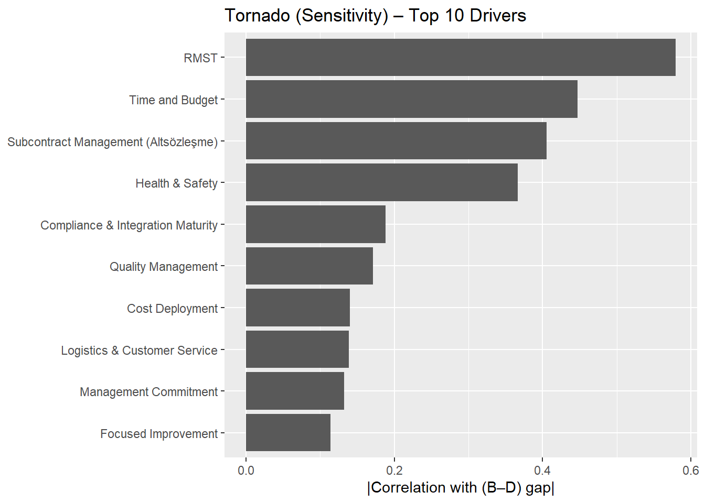
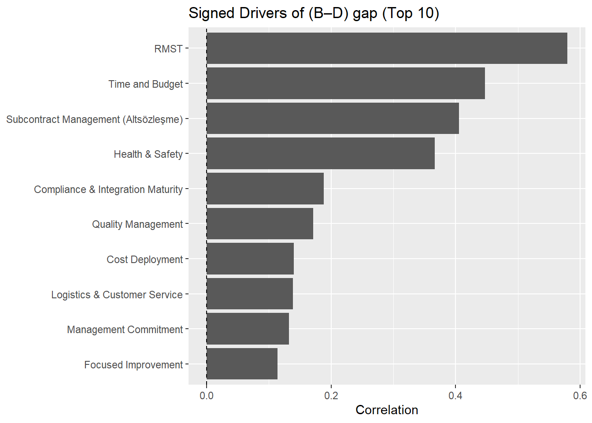
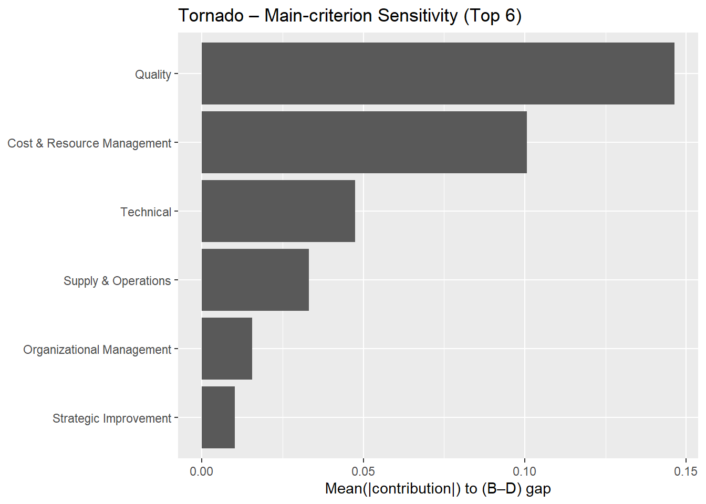

rm(list = ls())
library(readxl)
library(dplyr)
library(tidyr)
library(ggplot2)
library(tibble)
file_path <- "data/supplier_scores.xlsx"
df <- read_excel(file_path, .name_repair = "unique") %>%
select(-matches("^\\.\\.\\."))
names(df) [1] "Main_Criterion" "Sub_Criterion" "Global_Weight" "Global_Weight_%"
[5] "Supplier1_Score" "Supplier1_Delta" "Supplier2_Score" "Supplier2_Delta"
[9] "Supplier3_Score" "Supplier3_Delta" "Supplier4_Score" "Supplier4_Delta"glimpse(df)Rows: 19
Columns: 12
$ Main_Criterion <chr> "Technical", "Technical", "Supply & Operations", "Su…
$ Sub_Criterion <chr> "Compliance & Integration Maturity", "RMST", "Subcon…
$ Global_Weight <dbl> 0.0539, 0.1617, 0.1125, 0.0375, 0.0145, 0.0145, 0.02…
$ `Global_Weight_%` <dbl> 5.39, 16.17, 11.25, 3.75, 1.45, 1.45, 2.90, 3.50, 2.…
$ Supplier1_Score <dbl> 3, 2, 3, 3, 3, 3, 2, 3, 3, 3, 3, 4, 3, 3, 2, 5, 4, 3…
$ Supplier1_Delta <dbl> 0.5, 0.5, 0.5, 0.5, 0.5, 0.5, 0.5, 0.5, 0.5, 0.5, 0.…
$ Supplier2_Score <dbl> 4, 4, 3, 3, 3, 3, 3, 3, 3, 3, 3, 3, 3, 2, 2, 4, 4, 4…
$ Supplier2_Delta <dbl> 0.5, 0.5, 0.5, 0.5, 0.5, 0.5, 0.5, 0.5, 0.5, 0.5, 0.…
$ Supplier3_Score <dbl> 3, 3, 2, 2, 3, 3, 2, 2, 2, 2, 3, 2, 2, 2, 2, 3, 3, 2…
$ Supplier3_Delta <dbl> 0.5, 0.5, 0.5, 0.5, 0.5, 0.5, 0.5, 0.5, 0.5, 0.5, 0.…
$ Supplier4_Score <dbl> 4, 4, 3, 3, 3, 3, 3, 3, 3, 3, 3, 3, 3, 3, 2, 3, 3, 3…
$ Supplier4_Delta <dbl> 0.5, 0.5, 0.5, 0.5, 0.5, 0.5, 0.5, 0.5, 0.5, 0.5, 0.…df %>% head(5)# A tibble: 5 × 12
Main_Criterion Sub_Criterion Global_Weight `Global_Weight_%` Supplier1_Score
<chr> <chr> <dbl> <dbl> <dbl>
1 Technical Compliance &… 0.0539 5.39 3
2 Technical RMST 0.162 16.2 2
3 Supply & Operat… Subcontract … 0.112 11.2 3
4 Supply & Operat… Logistics & … 0.0375 3.75 3
5 Strategic Impro… Work Place O… 0.0145 1.45 3
# ℹ 7 more variables: Supplier1_Delta <dbl>, Supplier2_Score <dbl>,
# Supplier2_Delta <dbl>, Supplier3_Score <dbl>, Supplier3_Delta <dbl>,
# Supplier4_Score <dbl>, Supplier4_Delta <dbl>w_raw <- suppressWarnings(as.numeric(df[["Global_Weight_%"]]))
# yüzde (0-100) mi, oran (0-1) mı?
w0 <- if (all(w_raw <= 1, na.rm = TRUE)) w_raw else w_raw/100
# normalize (toplam 1)
w0 <- w0 / sum(w0, na.rm = TRUE)
m <- length(w0)
tibble(
m = m,
weight_sum = sum(w0, na.rm = TRUE),
min_w = min(w0, na.rm = TRUE),
max_w = max(w0, na.rm = TRUE)
)# A tibble: 1 × 4
m weight_sum min_w max_w
<int> <dbl> <dbl> <dbl>
1 19 1 0.00549 0.193B_score <- "Supplier2_Score"
D_score <- "Supplier4_Score"
muB <- suppressWarnings(as.numeric(df[[B_score]]))
muD <- suppressWarnings(as.numeric(df[[D_score]]))
crit_label <- if ("Sub_Criterion" %in% names(df)) df$Sub_Criterion else paste0("C", seq_len(nrow(df)))
main_map <- if ("Main_Criterion" %in% names(df)) df$Main_Criterion else rep("MAIN", nrow(df))
clamp <- function(x, lo=1, hi=5) pmax(lo, pmin(hi, x))
rtriangle <- function(n, a, c, b) {
u <- runif(n)
Fc <- (c - a) / (b - a)
ifelse(u < Fc,
a + sqrt(u * (b - a) * (c - a)),
b - sqrt((1 - u) * (b - a) * (b - c)))
}
rdirichlet_mat <- function(n, alpha) {
K <- length(alpha)
X <- matrix(rgamma(n*K, shape=alpha, rate=1), nrow=n, ncol=K, byrow=TRUE)
X / rowSums(X)
}
tibble(
score_columns = paste(B_score, D_score, sep = " vs "),
n_criteria = m,
has_Sub_Criterion = "Sub_Criterion" %in% names(df),
has_Main_Criterion = "Main_Criterion" %in% names(df)
)# A tibble: 1 × 4
score_columns n_criteria has_Sub_Criterion has_Main_Criterion
<chr> <int> <lgl> <lgl>
1 Supplier2_Score vs Supplier4_… 19 TRUE TRUE set.seed(42)
N <- 50000
kappa <- 300
half_range <- 0.5
alpha <- w0 * kappa # Dirichlet parametreleri
W <- rdirichlet_mat(N, alpha) # N x m ağırlık matrisi
SB <- sapply(seq_len(m), function(j) {
clamp(
rtriangle(N, muB[j] - half_range, muB[j], muB[j] + half_range),
1, 5
)
})
SD <- sapply(seq_len(m), function(j) {
clamp(
rtriangle(N, muD[j] - half_range, muD[j], muD[j] + half_range),
1, 5
)
})
delta <- SB - SD
gap <- rowSums(W * delta)
tibble(
N = N,
kappa = kappa,
half_range = half_range,
mean_gap = mean(gap),
p_B_beats_D = mean(gap > 0),
gap_p05 = unname(quantile(gap, 0.05)),
gap_p95 = unname(quantile(gap, 0.95))
)# A tibble: 1 × 7
N kappa half_range mean_gap p_B_beats_D gap_p05 gap_p95
<dbl> <dbl> <dbl> <dbl> <dbl> <dbl> <dbl>
1 50000 300 0.5 0.0448 0.678 -0.115 0.205drivers <- W * delta
corr <- sapply(seq_len(m), function(j) {
cor(drivers[, j], gap, use = "complete.obs")
})
tornado_corr <- tibble(
Criterion = crit_label,
Correlation = corr,
AbsCorrelation = abs(corr)
) %>%
arrange(desc(AbsCorrelation))
top10 <- tornado_corr %>% slice(1:10)
top10# A tibble: 10 × 3
Criterion Correlation AbsCorrelation
<chr> <dbl> <dbl>
1 RMST 0.579 0.579
2 Time and Budget 0.447 0.447
3 Subcontract Management (Altsözleşme) 0.405 0.405
4 Health & Safety 0.367 0.367
5 Compliance & Integration Maturity 0.188 0.188
6 Quality Management 0.171 0.171
7 Cost Deployment 0.140 0.140
8 Logistics & Customer Service 0.139 0.139
9 Management Commitment 0.132 0.132
10 Focused Improvement 0.114 0.114ggplot(top10, aes(x = AbsCorrelation, y = reorder(Criterion, AbsCorrelation))) +
geom_col() +
labs(title="Tornado (Sensitivity) – Top 10 Drivers",
x="|Correlation with (B–D) gap|", y=NULL)
ggplot(top10, aes(x = Correlation, y = reorder(Criterion, AbsCorrelation))) +
geom_col() +
geom_vline(xintercept = 0, linetype="dashed") +
labs(title="Signed Drivers of (B–D) gap (Top 10)",
x="Correlation", y=NULL)
gap_contrib <- W * (SB - SD)
main_contrib_df <- lapply(unique(main_map), function(mc) {
idx <- which(main_map == mc)
contrib_iter <- rowSums(gap_contrib[, idx, drop = FALSE])
data.frame(
Main_Criterion = mc,
MeanAbsContribution = mean(abs(contrib_iter))
)
}) %>%
bind_rows() %>%
arrange(desc(MeanAbsContribution))
main_contrib_top6 <- main_contrib_df %>% slice(1:6)
main_contrib_top6 Main_Criterion MeanAbsContribution
1 Quality 0.14635915
2 Cost & Resource Management 0.10070001
3 Technical 0.04739296
4 Supply & Operations 0.03319336
5 Organizational Management 0.01565841
6 Strategic Improvement 0.01021058ggplot(main_contrib_top6,
aes(x = MeanAbsContribution,
y = reorder(Main_Criterion, MeanAbsContribution))) +
geom_col() +
labs(title = "Tornado – Main-criterion Sensitivity (Top 6)",
x = "Mean(|contribution|) to (B–D) gap",
y = NULL)
main_contrib_df Main_Criterion MeanAbsContribution
1 Quality 0.14635915
2 Cost & Resource Management 0.10070001
3 Technical 0.04739296
4 Supply & Operations 0.03319336
5 Organizational Management 0.01565841
6 Strategic Improvement 0.01021058